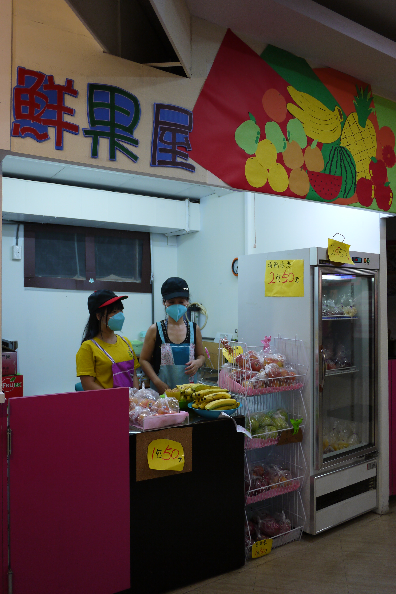
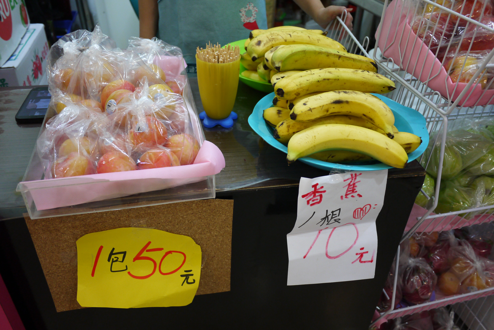
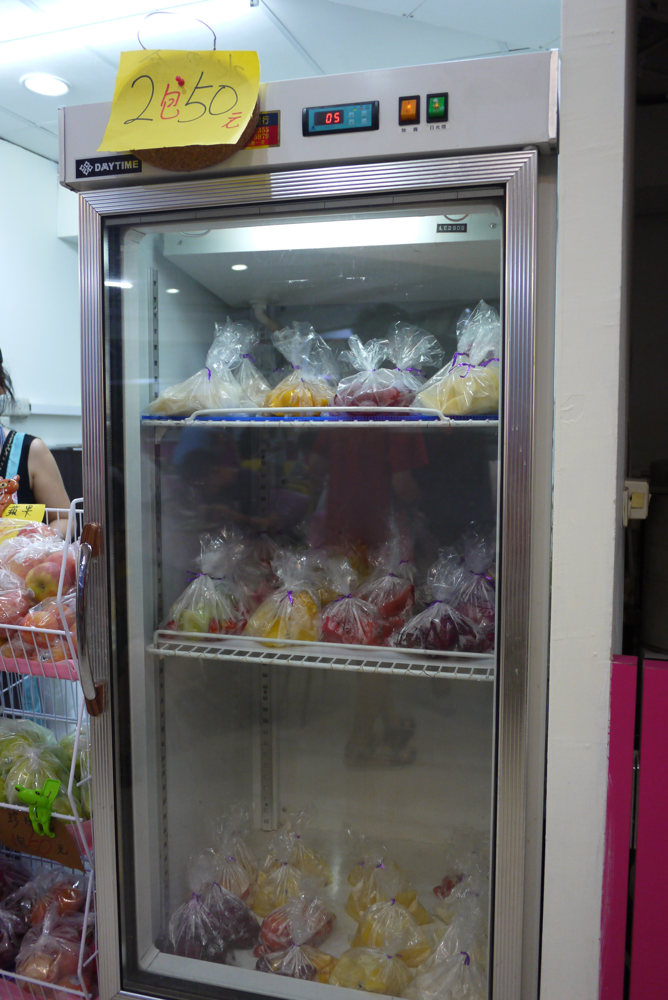

鮮果屋
金閣屋 | 日式食堂 | 籠町茶番 | 廣誠素食北風炊過廚房| 意式廚房| 華克山莊傳統韓國料理|
椰林燒臘| 吉登自助餐| 比司多Bistro
悠悠鮮果屋|
- 本校營業地點位置 大一女宿舍
- 餐飲業者名稱 悠悠鮮果屋
- 公司名稱 國煦有限公司
- 營業時間及休息日 10:00 ~ 14:30, 16:00 ~ 20:00
- 聯絡電話 (02)8369-5637 郭小姐
訂餐專線 0920-166-101 麗文阿姨 - 營業項目、型態 新鮮水果,現切水果盤
- 業者簡介
特選各式新鮮香甜的優質水果.粒粒飽滿高甜度
以最優惠的價格,及最親切的服務來回饋師生
來份富含維生素C的養顏美容瘦身餐,是您的最佳選擇!
餐廳業者參考照片
-


